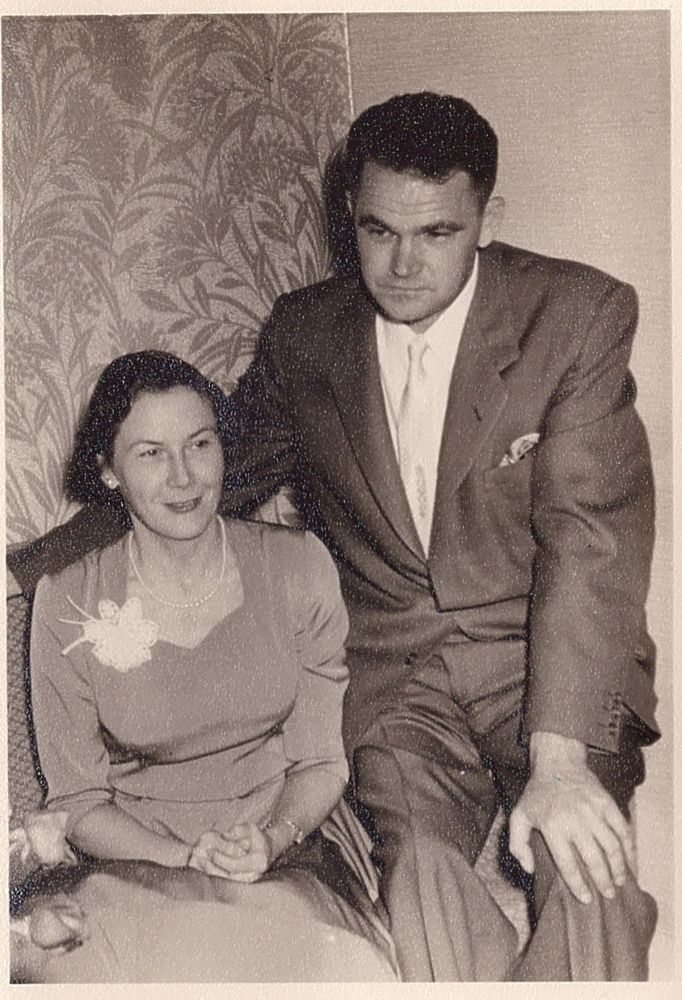
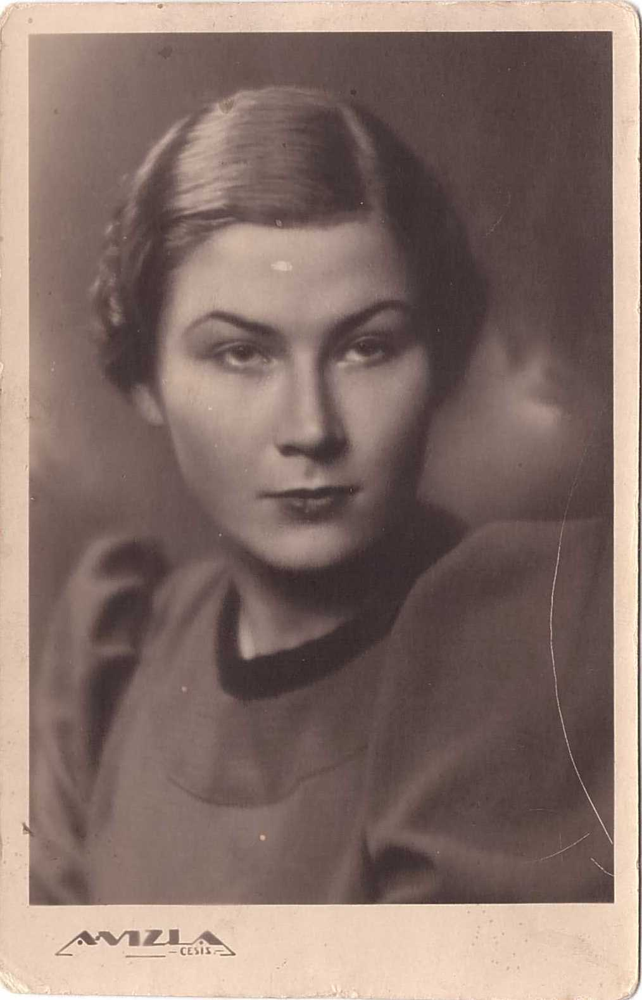
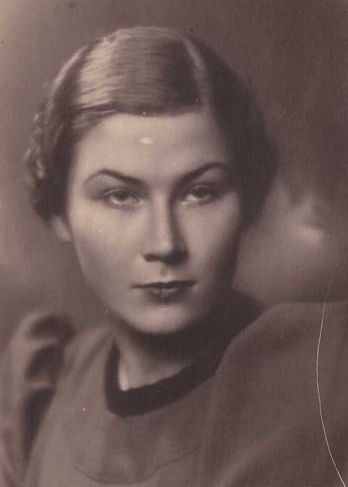

Velta Skaidrīte Sirlaka 1918–2015
Peter's first cousin twice removed.
Also recorded as Velta Grīslis; Velta (Skaidrīte) Sirlaks (married name Grīslis).
Velta Skaidrīte Sirlaka was born on 19 Sep 1918 in Jaunrauna, Rauna, Cēsis district, Vidzeme, Latvia4,5, the daughter of Dāvis Sirlaks and Alma Leontīne Āboltiņa3,17,18. She married Jānis Grīslis about Jun 1955 in Hamilton, Ontario, Canada19,20,21. She left Latvia between 1944 and 194513. She died on 12 Mar 2015 in St. Catharines, Ontario, Canada5 and was buried at Jaunrauna cemetery, Jaunrauna, Rauna, Cēsis district, Vidzeme, Latvia5,15.
Family
- Parents
- Dāvis Sirlaks 1886–1952 and Alma Leontīne Āboltiņa 1887–1959 documented
- Husband
- Jānis Grīslis 1916–2012 · married about Jun 1955 in Hamilton, Ontario, Canada19,20,21
Life events
| Event | Date | Place and details |
|---|---|---|
| Born | 3 Sep 1918 | Vīstuči farm, Jaunrauna, Rauna, Cēsis district, Vidzeme, Latvia2,3 |
| Born | 19 Sep 1918 | Jaunrauna, Rauna, Cēsis district, Vidzeme, Latvia Preferred version: Her DP card and her 2015 obituary agree on 19 Sep 1918. Aina's memoir prints 3.IX.1918 twice (pp. 22, 34); not a calendar shift (Latvia was on the Gregorian calendar by then). The 1918 Rauna baptism would decide.4,5 |
| Born | 3 Oct 1918 | Vīstuči farm, Jaunrauna, Rauna, Cēsis district, Vidzeme, Latvia According to an online family tree6 |
| Education | bet 1930 and 1944 | Cēsis, Cēsis district, Vidzeme, Latvia Cēsis State Gymnasium (lodged with "Madame Sahner" to learn German); nursing school in Rīga; nurse at Rīga 1st City Hospital. Confirmed at Rauna (godmother Alma of "Gauši", p. 31).11 |
| Lived | bet 1937 and 9 Aug 1944 | Rīga, Vidzeme, Latvia8 |
| Left | bet 1944 and 1945 | Latvia13 |
| Lived | bet 9 Aug 1944 and 1948 | Mürwik DP camp, Flensburg, Germany9 |
| Lived | bet 1948 and Jun 1955 | Montreal, Quebec, Canada10 |
| Married | abt Jun 1955 | with Jānis Grīslis Hamilton, Ontario, Canada19,20,21 |
| Died | 12 Mar 2015 | Toronto, Ontario, Canada According to an online family tree3,14 |
| Died | 12 Mar 2015 | St. Catharines, Ontario, Canada Preferred version: Her 2015 obituary gives the day and a St. Catharines nursing home; Voronins's tree has only 2015, Toronto, and Raimonds's MyHeritage tree 12 Mar 2015, Toronto (no record cited).5 |
| Note | 20 Mar 2015 | Funeral services, listed on her Dignity Memorial obituary page as 'Past Services': a Visitation and a Celebration of Life, both on Friday, 20 March 2015 (eight days after her death). The page shows no venue; the obituary is the Hulse & English Funeral Home's, St. Catharines. The listing was added…16 |
| Baptised | 7 | |
| Education | valsts universitāte Medicīnas māsa According to an online family tree12 | |
| Buried | Jaunrauna cemetery, Jaunrauna, Rauna, Cēsis district, Vidzeme, Latvia5,15 |
Possible records (not confirmed)
Records that may concern her, but don't settle it: an initial and a surname only, a family recollection, or a reading that needs a second look. Each links to the record.
- Other: LEAD (M): Velta’s birth date: 3 Sep (memoir) vs 19 Sep 1918 (DP card, obituary).22 Would be settled by: Rauna baptisms 1918 (if filmed) or civil birth register.
- Other: LEAD (W): Velta Grīsle and Jānis Grīslis in Canada; how she got out in 1944–45 as a nurse.22 Would be settled by: Canadian immigration records; DP files (Arolsen).
- Education 1937-06 Cēsis, Latvia: Among the 1937 graduates of a Cēsis school ('praktisko klasi ar gatavības apliecību'). In 1936–37 an Ilga and a Voldemārs Sirlaks won prizes in the Jaunrauna 4-H (mazpulks) competition. They are probably Velta's siblings or cousins on the Jaunrauna farm (not verified).23 Name and town match; the age is plausible; no parent named.
- Birth 1920-04-21 Russia (Krievija): Passport index row, father's name blank, domicile blank. A web snippet (MyHeritage/Geni) has 'Velta Mirdza Larsens (born Sirlaka), b. 1920'. The memoir's cousin Velta (daughter of Dāvis, later in Canada) may be this woman or 'Velta (Skaidrīte) Grīslis née Sirlaks', daughter of Alma Leontīne Sirlaka née Āboltiņa (1887–1959). Unresolved.24 Surname only; there may be two Veltas.
Photographs




Records


Open questions
Sources
- MyHeritage family tree 'Dzimta' of Peter's third cousin (his family site), member GEDCOM export of 26 Oct 2026, I57 (person-6000057), GEDCOM lines 2398–2460.
NAME Velta (Skaidrīte) /Sirlaks/ · _MARNM Grīslis
- Ainas Sirlakas atmiņas ("Vīstuči"), Aina Jurciņa née Sirlaka, Priekuļi, 1998, pp. 22, 35, 21, section "LEJAS VĪSTUČOS SAVU DZIMTAS KOKU IESTĀDA MĀRČA MAZDĒLS DAVIDS".
Velta Sirlaka 1918. 3.IX … Velta Sirlaka, dz. 1918. 3.septembrī … Mūsu vecākā māsa- 1918.gada septembrī.
Translation: Velta Sirlaka, 3 IX 1918 … Velta Sirlaka, b. 3 September 1918 … Our eldest sister: September 1918.
CONFLICT: printed twice as 3 Sep 1918; our data (DP card, obituary) have 19 Sep 1918. Not explained by Julian/Gregorian (that would give 16 Sep). Born in the one room of the old house at Vīstuči (p. 25).
- Raimonds Voronins, family tree shared on FamilyTreeDNA (Sirlaks / Gibboy lines), Dāvis Sirlaks family.
- Personal file of SIRLAKS, VELTA (Resettlement Record), ITS Nr. 9-18628, DE ITS 3.2.1.1, ref. 32110000 311.137, DocID 79785774.
SIRLAKS VELTA D.P. FEMALE 19.9.1918 JAUNRAUNA CĒSIS LATVIA EV.LUTH. … RIGA 9.VIII.1944 … NURSE … OPTHALMIC SECTION … MŪRWIK 1203 FLENSBURG
Single, Ev.-Lutheran; in Rīga until 9.VIII.1944; Cēsis secondary school, university not finished; nurse (ophthalmic); in 1947 at Mürwik DP camp (centre 1203), Flensburg, British zone. Probably the memoir's 'cousin Velta' (¶13), daughter of Mārtiņš's brother Dāvis, later in Canada (Velta Grīslis?).
- Obituary of Velta Grislis (beloved wife of the late Janis), St. Catharines, Ontario, and death record of Jānis Grīslis (1 Apr 2012), Dignity Memorial obituary 6359511.
Grislis, Velta. Peacefully on Thursday, March 12th, 2015 at Tufford Manor Nursing Home in her 97th year. Velta, beloved wife of the late Janis. Lovingly remembered by Andris Lauris and his family.
Born 19 Sep 1918; in her 97th year. 'Beloved wife of the late Janis' (Jānis Grīslis, 11 Mar 1916 – 1 Apr 2012, per a Dignity Memorial index; Timenote gives d. 01.04.2012). 'Lovingly remembered by Andris Lauris and his family': relationship not stated, a living third party. The obituary does not name her parents, but Timenote names her father Dāvis and maiden name Sirlaka, and gives her burial at Jaunrauna cemetery (ashes presumably returned to Latvia). She was a Red Cross-trained nurse: there is a 1955 file 'Grislis, Velta (Nee Sirlaks)' in the International Council of Nurses Nurse Refugee Files at the University of Pennsylvania, and Sirlaks hits in the Latvian Red Cross nurses' journal (Žēlsirdīgā Māsa, 1939–40). Her full name was Velta Skaidrīte.
- MyHeritage family tree 'Dzimta' of Peter's third cousin (his family site), member GEDCOM export of 26 Oct 2026, I57 (person-6000057), GEDCOM lines 2398–2460.
BIRT · 3 OCT 1918 · Vīstuči, Jaunrauna
His record match: Index of Obituaries, https://www.myheritage.lv/research/collection-10822/index-of-obituaries?itemId=12069785&action=showRecord: 'Velta Grislis | Dzimšana: 1918.gada 19. Sep | Miršana: 2015.gada 12. Mar | Obituary text: Grislis, Velta Peacefully on Thursday, March 12th, 2015 at Tuff | ord Manor Nursing Home in her 97th year. Velta, beloved wife of the late Janis. Lovingly remembered by Andris Lauris and his family. Friends will be received at the HULSE & ENGLISH FUNERAL HOME &a | mp; CHAPEL, 75 Church Street, St. Catharines (905-684-6346), on …'.
- Ainas Sirlakas atmiņas ("Vīstuči"), Aina Jurciņa née Sirlaka, Priekuļi, 1998, pp. 39, 41, section "DARBS MŪSU ROTA".
Viņš bija mūsu Veltas krusttēvs … Alma bija krustmāte mūsu Veltai
Translation: He [Jēkabs Zirnis] was our Velta's godfather … Alma [Strube] was godmother to our Velta
Godparents: Jēkabs Zirnis of "Kalna Gāles" (neighbour, unmarried dairy cashier) and Alma Strube of "Vidusvīstuči", later wife of Kārlis Ozols of "Gauši" (she died in Siberia after 1941). Useful for finding the baptism entry.
- Personal file of SIRLAKS, VELTA (Resettlement Record), ITS Nr. 9-18628, DocID 79785774.
1. REGISTRANT: SIRLAKS VELTA | 3. PREVIOUS RESIDENCE: Town RIGA | Province RIGA | Country LATVIA | 9.VIII.1944 | 6. Primary occupation and Code: NURSE E5 | Specialisation: OPTHALMIC SECTION
Graduated from the Red Cross Sisters of Mercy nursing school ('Žēlsirdīgo māsu skola') in Rīga and worked as an ophthalmic nurse ('NURSE E5 / OPTHALMIC SECTION') in Rīga until departing Rīga on 9 August 1944.
- Personal file of SIRLAKS, VELTA (Resettlement Record), ITS Nr. 9-18628, DocID 79785774.
2. DOCUMENTS: DPIC. G21001248, in LÜBECK 28.11.45. No. E. 13189 | 9. LOCATIONS — Present Location: Camp MÜRWIK | Centre No. 1203 (No. 114 D.P.A.C.C.S.) | Town FLENSBURG | Region Schleswig-Holstein
Refugee nurse in Schleswig-Holstein in the British Zone of Germany after leaving Rīga on 9 August 1944, recorded in Lübeck on 28 November 1945 (DPIC G21001248) and at Camp Mürwik (Centre No. 1203, Flensburg, Schleswig-Holstein, No. 114 D.P.A.C.C.S.).
- S-fs-K8MZ-L8N.
nearest relative: cousin - Velta Sirlaks - c/o Homeopathic Hosp. Montreal
Emigrated to Canada in 1948 and lived in Montreal, Quebec, where she is recorded on 6 April 1950 as her cousin Mirdza Sirlaka's nearest relative in Canada ('cousin - Velta Sirlaks - c/o Homeopathic Hosp. Montreal') and on the membership roll of the Montreal Latvian Relief Society before marrying Jānis Grīslis in Toronto in June 1955.
- Ainas Sirlakas atmiņas ("Vīstuči"), Aina Jurciņa née Sirlaka, Priekuļi, 1998, p. 30, section "NĀKAMĀS VĪSTUČBĒRNU SKOLAS".
Velta mācījās Cēsu valsts ģimnāzijā. … Pēc tam Velta beidza Žēlsirdīgo māsu skolu Rīgā. Strādāja I pilsētas slimnīcā.
Translation: Velta studied at the Cēsis State Gymnasium. … Then Velta graduated from the Sisters of Mercy (nursing) school in Rīga. She worked at the 1st City Hospital.
Cēsis State Gymnasium (lodged with "Madame Sahner" to learn German); nursing school in Rīga; nurse at Rīga 1st City Hospital. Confirmed at Rauna (godmother Alma of "Gauši", p. 31).
- MyHeritage family tree 'Dzimta' of Peter's third cousin (his family site), member GEDCOM export of 26 Oct 2026, I57 (person-6000057), GEDCOM lines 2398–2460.
EDUC · valsts universitāte · Medicīnas māsa
- Ainas Sirlakas atmiņas ("Vīstuči"), Aina Jurciņa née Sirlaka, Priekuļi, 1998, p. 31, section "DĀVJA UN ALMAS OTRĀ BĒRNA VELTAS DZĪVES GAITA".
Kara laikā tā arī tur nokļuva, par žēlsirdīgo māsu strādājot. Dzīvo Kanādā.
Translation: In the war she got there [to sunny, distant lands], working as a nurse. She lives in Canada.
Left Latvia during the war as a nurse; living in Canada in 1998 in her own house; winters in Florida (p. 32).
- MyHeritage family tree 'Dzimta' of Peter's third cousin (his family site), member GEDCOM export of 26 Oct 2026, I57 (person-6000057), GEDCOM lines 2398–2460.
DEAT · 12 MAR 2015 · Toronto, Toronto Division, Ontario, Kanāda · AGE 96
His record match: Index of Obituaries, https://www.myheritage.lv/research/collection-10822/index-of-obituaries?itemId=12069785&action=showRecord: 'Velta Grislis | Dzimšana: 1918.gada 19. Sep | Miršana: 2015.gada 12. Mar | Obituary text: Grislis, Velta Peacefully on Thursday, March 12th, 2015 at Tuff | ord Manor Nursing Home in her 97th year. Velta, beloved wife of the late Janis. Lovingly remembered by Andris Lauris and his family. Friends will be received at the HULSE & ENGLISH FUNERAL HOME &a | mp; CHAPEL, 75 Church Street, St. Catharines (905-684-6346), on …'.
- MyHeritage family tree 'Dzimta' of Peter's third cousin (his family site), member GEDCOM export of 26 Oct 2026, I57 (person-6000057), GEDCOM lines 2398–2460.
BURI · Jaunraunas kapi, Latvija
- Obituary of Velta Grislis (beloved wife of the late Janis), St. Catharines, Ontario, and death record of Jānis Grīslis (1 Apr 2012), Dignity Memorial obituary 6359511 (as of 2026-11-01).
Past Services Friday, March 20, 2015 Visitation Friday, March 20, 2015 Celebration of Life
Funeral services, listed on her Dignity Memorial obituary page as 'Past Services': a Visitation and a Celebration of Life, both on Friday, 20 March 2015 (eight days after her death). The page shows no venue; the obituary is the Hulse & English Funeral Home's, St. Catharines. The listing was added to the page after our first capture of 2026-10-25, which read 'No public services are scheduled at this time'; the monthly rescan of 2026-11-01 found it.
- My Life and Times (1912–1949), ¶13.
Dāvis (the father of our cousin Velta, who now lives in Canada)
- Ainas Sirlakas atmiņas ("Vīstuči"), Aina Jurciņa née Sirlaka, Priekuļi, 1998, pp. 9, 21, 26, section "PAR PĒTERA UN MARIJAS PIEKTO BĒRNU DĀVIDU".
Viņiem ir pieci bērni: Jānis, Velta, Aina, Valdis, Ilga. … Mūsu vecākā māsa- 1918.gada septembrī. Mēs, pārējie trīs bērni, ik pēc 2 gadiem. … Mēs četri: Velta, Aina, Ilga, Valdis
Translation: They have five children: Jānis, Velta, Aina, Valdis, Ilga. … Our eldest sister, in September 1918. We, the other three children, every 2 years. … We four: Velta, Aina, Ilga, Valdis
Children: Jānis (1916–1918), Velta (1918), Aina (1920), Ilga (1922), Valdis (1924). p. 9 lists Valdis before Ilga, but the dated registers (pp. 22, 34) put Ilga first.
- Ainas Sirlakas atmiņas ("Vīstuči"), Aina Jurciņa née Sirlaka, Priekuļi, 1998, pp. 31–32, 35, section "DĀVJA UN ALMAS OTRĀ BĒRNA VELTAS DZĪVES GAITA".
Labs, gādīgs vīrs- Jānis … Grīslis. Bērnu nav. … Velta Sirlaka, dz. 1918. 3.septembrī … Jānis Grīslis, ? … Bērni: nav
Translation: A good, caring husband, Jānis Grīslis. No children. … Velta Sirlaka, b. 3 Sep 1918 … Jānis Grīslis, ? … Children: none
Husband Jānis Grīslis (birth date unknown to Aina, "?"; our data: b. 11 Mar 1916, d. 1 Apr 2012). No children. Our data: married c. June 1955, Hamilton, Ontario.
- Kanadā, Latvija Amerikā, 1955-06-22.
Māc. E. Pavasars Hamiltonā latviešu draudzē salaulājis Jāni Grīsli ar Veltu Sirlaku.
Translation: Rev. E. Pavasars, in the Latvian congregation in Hamilton, married Jānis Grīslis and Velta Sirlaka.
Rev. E. Pavasars married Jānis Grīslis and Velta Sirlaka. This confirms that 'Velta Grīslis' of Raimonds's album was born Sirlaka, i.e. the memoir's cousin Velta, daughter of Dāvis Sirlaks of Vīstuči. Her husband Jānis is the one Raimonds could identify in her photos.
- MyHeritage family tree 'Dzimta' of Peter's third cousin (his family site), member GEDCOM export of 26 Oct 2026, family F23 (I60 Jānis Grīslis × I57 Velta Skaidrīte Sirlaka).
MARR Kanāda
- S-aina-memoir-ainas-sirlakas-atminas-vistuci-aina-jurcina.
- S-periodika-55550189.
- S-lvva-pases-sirlaka-velta-mirdza-1920-04-21-krievija.